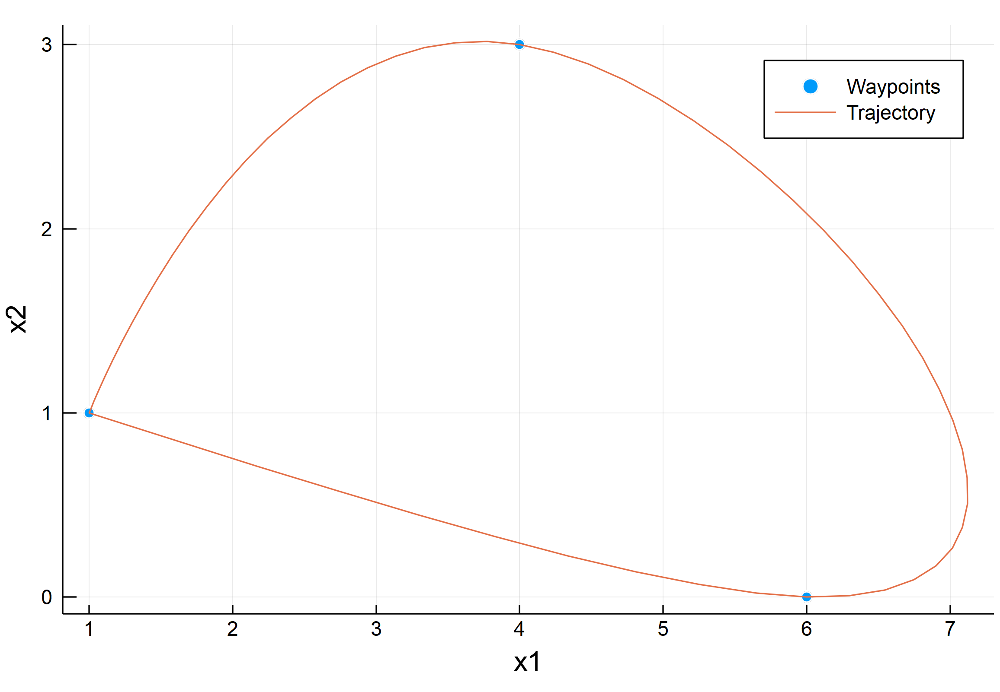

Examples
Here we exemplify the use of InfiniteOpt via a few case studies:
Two-Stage Stochastic Program
First let's consider a standard two-stage stochastic program. Such problems consider 1st stage variables $x \in X \subseteq \mathbb{R}^{n_x}$ which denote upfront (hear-and-now) decisions made before any realization of the random parameters $\xi \in \mathbb{R}^{n_\xi}$ is observed, and 2nd stage variables $y(\xi) \in \mathbb{R}^{n_y}$ which denote recourse (wait-and-see) decisions that are made in response to realizations of $\xi$. Moreover, the objective seeks to optimize 1st stage costs $f_1(x)$ and second stage costs $f_2(x, y(\xi))$ which are evaluated over the uncertain domain via a risk measure $R_\xi[\cdot]$ (e.g., the expectation $\mathbb{E}_\xi[\cdot]$). Putting this together, we obtain the two-stage stochastic program:
where $g_i(x, y(\xi)), \ i \in I,$ denote 2nd stage equality constraints, $h_j(x, y(\xi)), \ j \in J,$ are 2nd stage inequality constraints, and $X$ denotes the set of feasible 1st stage decisions.
For an example, we consider the classic farmer problem. Here the farmer must allocate farmland $x_c$ for each crop $c \in C$ with random yields per acre $\xi_c$ such that he minimizes expenses (i.e., maximizes profit) while fulfilling contractual demand $d_c$. If needed he can purchase crops from other farmers to satisfy his contracts. He can also sell extra crop yield that exceeds his contractual obligations. Thus, here we have 1st stage variables $x_c$ and 2nd stage variables of crops sold $w_c(\xi)$ and crops purchased $y_c(\xi)$. Putting this together using the expectation $\mathbb{E}_\xi[\cdot]$ as our risk measure we obtain:
where $\alpha_c$ are production costs, $\beta_c$ are the purchase prices, $\lambda_c$ are the selling prices, $\bar{x}$ is the total acreage, $\bar{y}_c$ are purchases limits, $\bar{w}_c$ are selling limits, and $\Xi_c$ are the underlying distributions.
Now let's implement this first by defining the problem parameters:
using Distributions
# Model parameters
num_scenarios = 10
C = 1:3
# Data
α = [150, 230, 260] # land cost
β = [238, 210, 0] # purchasing cost
λ = [170, 150, 36] # selling price
d = [200, 240, 0] # contract demand
xbar = 500 # total land
wbar3 = 6000 # no upper bound on the other crops
ybar3 = 0 # no upper bound on the other crops
# Define the distributions
Ξ = [Uniform(0, 5), Uniform(0, 5), Uniform(10, 30)]Great now we can formulate and solve the problem using InfiniteOpt:
using InfiniteOpt, JuMP, Ipopt, Random
# Seed for repeatability
Random.seed!(0)
# Initialize the model
model = InfiniteModel(Ipopt.Optimizer) # seed to test output
set_optimizer_attribute(model, "print_level", 0)
# Define the random parameters
@infinite_parameter(model, ξ[c in C] in Ξ[c], num_supports = num_scenarios)
# Define the variables and bounds
@hold_variable(model, 0 <= x[C] <= xbar)
@infinite_variable(model, 0 <= y[C](ξ))
@infinite_variable(model, 0 <= w[C](ξ))
# Define the objective
@objective(model, Min, sum(α[c] * x[c] for c in C) +
expect(sum(β[c] * y[c] - λ[c] * w[c] for c in C), ξ))
# Define the constraints
@constraint(model, capacity, sum(x[c] for c in C) <= xbar)
@constraint(model, balance[c in C], ξ[c] * x[c] + y[c] - w[c] >= d[c])
@constraint(model, w[3] <= wbar3)
@constraint(model, y[3] <= ybar3)
# Optimize and get the results
optimize!(model)
x_opt = value.(x)
profit = -objective_value(model)
# Print the results
println("Land Allocations: ", [round(x_opt[k], digits = 2) for k in keys(x_opt)])
println("Expected Profit: \$", round(profit, digits = 2))Land Allocations: [48.56, 214.77, 236.67]
Expected Profit: $57099.53We did it! An interesting modification would be to use a $CVaR$ risk measure instead of an expectation. This also can be readily achieved via InfiniteOpt. The $CVaR$ measure is defined:
where $\epsilon$ is the confidence level. Inserting this into the formulation, we now obtain:
where $q(\xi)$ is introduced to handle the max operator. Let's update and resolve our InfiniteOpt model using $\epsilon = 0.95$:
# Define the additional variables
@hold_variable(model, t)
@infinite_variable(model, q(ξ) >= 0)
# Redefine the objective
@objective(model, Min, sum(α[c] * x[c] for c in C) + t + 1 \ (1 - 0.95) * expect(q, ξ))
# Add the max constraint
@constraint(model, max, q >= sum(β[c] * y[c] - λ[c] * w[c] for c in C) - t)
# Optimize and get the results
optimize!(model)
x_opt = value.(x)
y_opt = value.(y)
w_opt = value.(w)
profit = -sum(α[c] * x_opt[c] for c in C) - 1 / num_scenarios *
sum(β[c] * y_opt[c][k] - λ[c] * w_opt[c][k] for c in C, k in 1:num_scenarios)
# Print the results
println("Land Allocations: ", [round(x_opt[k], digits = 2) for k in keys(x_opt)])
println("Expected Profit: \$", round(profit, digits = 2))Land Allocations: [58.5, 199.25, 242.26]
Expected Profit: $32918.89Optimal Control
In this case study, we seek to determine an optimal control policy for the trajectory of a hovercraft that travels to a set of dynamic waypoints while trying to minimize the thrust input. The corresponding dynamic optimization problem is expressed:
where $x(t)$ is the Cartesian position, $v(t)$ is the velocity, $u(t)$ is the thrust input, $xw_i, \ i \in I,$ are the waypoints, and $T$ is the time horizon. This contains two ordinary differential equations which aren't currently supported by InfiniteOpt, so we'll need to reformulate them. This can be achieved via a simple Euler integration. Thus, we define a set of time points $T_m \subseteq T$ with an equal time step $\Delta t$ and apply Euler's method to obtain:
where $T_{mf}$ is the final time point in $T_m$.
Let's implement this in InfiniteOpt by first defining our problem parameters:
# Initial condition
v0 = [0, 0]
# Time horizon
max_time = 60
# Euler parameters
Δt = 1
time_points = Vector(0:Δt:max_time)
# Waypoints
xw = [1 4 6 1; 1 3 0 1] # positions
tw = [0, 25, 50, 60] # timesWith our parameters set, let's now construct the InfiniteModel and solve it:
using InfiniteOpt, JuMP, Ipopt
# Initialize the model
m = InfiniteModel(optimizer_with_attributes(Ipopt.Optimizer, "print_level" => 0))
# Set the parameters and variables
@infinite_parameter(m, t in [0, max_time])
@infinite_variable(m, x[1:2](t), start = 1) # position
@infinite_variable(m, v[1:2](t), start = 0) # velocity
@infinite_variable(m, u[1:2](t), start = 0) # thruster input
# Set the initial conditions
@BDconstraint(m, initial_velocity[i = 1:2](t == 0), v[i] == 0)
# Manually implement euler scheme for motion equations
@point_variable(m, x[i](time_points[j]), xp[i = 1:2, j = 1:length(time_points)])
@point_variable(m, v[i](time_points[j]), vp[i = 1:2, j = 1:length(time_points)])
@point_variable(m, u[i](time_points[j]), up[i = 1:2, j = 1:length(time_points)])
@constraint(m, [i = 1:2, j = 1:length(time_points)-1], xp[i, j+1] == xp[i, j] + vp[i, j])
@constraint(m, [i = 1:2, j = 1:length(time_points)-1], vp[i, j+1] == vp[i, j] + up[i, j])
# Hit all the waypoints
@BDconstraint(m, [i = 1:2, j = 1:length(tw)](t == tw[j]), x[i] == xw[i, j])
# Specify the objective
@objective(m, Min, integral(u[1]^2 + u[2]^2, t))
# Optimize the model
optimize!(m)This thus demonstrates how point variables can be used to enable functionality that is not built in InfinitOpt. Finally, let's extract the solution and plot it to see the finalized trajectory:
# Get the results
if has_values(m)
x_opt = value.(x)
end
# Plot the results
scatter(xw[1,:], xw[2,:], label = "Waypoints")
plot!(x_opt[1,:], x_opt[2,:], label = "Trajectory")
xlabel!("x1")
ylabel!("x2")